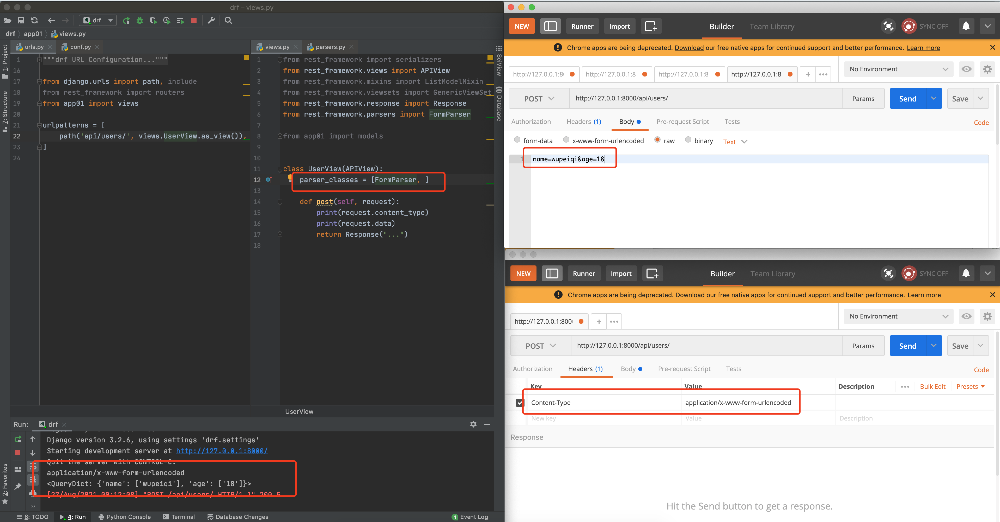
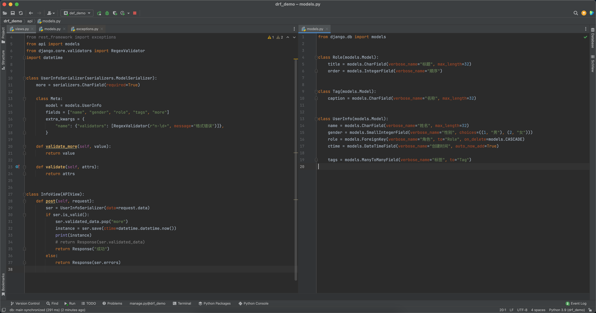

day14 drf-中篇
上节内容：前后端分离概述、纯净项目、request对象、认证、权限、限流等。
本节内容：
- 版本，在请求中携带版本号，便于后续API的更新迭代。
http://www.5xclass/api/v1/info
http://www.5xclass/api/v2/info
- 解析器，读取不同格式数据进行解析然后赋值给request.data等对象中。
user=wupeiqi&age=123
{"user":"wupeiqi","age":123}
-
序列化器，将ORM获取的数据库QuerySet或数据对象序列化成JSON格式 + 请求数据格式校验。（最重要）
-
分页，对ORM中获取的数据进行分页处理，分批返回给用户。
-
视图，drf中提供了APIView+其他视图类让我们来继承。
1.版本
在restful规范中要去，后端的API中需要体现版本。
1.1 GET参数传递
# settings.py
REST_FRAMEWORK = {
"VERSION_PARAM": "v",
"DEFAULT_VERSION": "v1",
"ALLOWED_VERSIONS": ["v1", "v2", "v3"],
"DEFAULT_VERSIONING_CLASS":"rest_framework.versioning.QueryParameterVersioning"
}
源码执行流程：

1.2 URL路径传递（*）
1.3 请求头传递
1.4 反向生成URL
在每个版本处理的类中还定义了reverse方法，他是用来反向生成URL并携带相关的的版本信息用的，例如：


2.解析器
使用 request.data 获取请求体中的数据。
这个 reqeust.data 的数据怎么来的呢？其实在drf内部是由解析器，根据请求者传入的数据格式 + 请求头来进行处理。
2.1 JSONParser （*）

2.2 FormParser

2.3 MultiPartParser（*）

<!DOCTYPE html>
<html lang="en">
<head>
<meta charset="UTF-8">
<title>Title</title>
</head>
<body>
<form action="http://127.0.0.1:8000/test/" method="post" enctype="multipart/form-data">
<input type="text" name="user" />
<input type="file" name="img">
<input type="submit" value="提交">
</form>
</body>
</html>
2.4 FileUploadParser（*）

解析器可以设置多个，默认解析器：
from rest_framework.views import APIView
from rest_framework.response import Response
from rest_framework.parsers import MultiPartParser, JSONParser, FormParser
class UserView(APIView):
def post(self, request):
print(request.content_type)
print(request.data)
return Response("...")
3.序列化器
3.1 序列化数据
3.1.1 Serializer
from django.db import models
class Role(models.Model):
title = models.CharField(verbose_name="标题", max_length=32)
order = models.IntegerField(verbose_name="顺序")
from rest_framework.views import APIView
from rest_framework.response import Response
from rest_framework import serializers
from api import models
class InfoSerializer(serializers.Serializer):
id = serializers.IntegerField()
title = serializers.CharField()
order = serializers.IntegerField()
class InfoView(APIView):
def get(self, request):
# 1.数据库获取多条数据
# queryset = models.Role.objects.all()
# ser = InfoSerializer(instance=queryset, many=True)
# 2.数据库获取单条数据
instance = models.Role.objects.all().first()
ser = InfoSerializer(instance=instance, many=False)
print(type(ser.data), ser.data)
return Response(ser.data)
3.1.2 ModelSerializer
from django.db import models
class Role(models.Model):
title = models.CharField(verbose_name="标题", max_length=32)
order = models.IntegerField(verbose_name="顺序")
from rest_framework.views import APIView
from rest_framework.response import Response
from rest_framework import serializers
from api import models
class InfoSerializer(serializers.ModelSerializer):
class Meta:
model = models.Role
# fields = "__all__"
# fields = ['id', 'title', 'order']
exclude = ["id"]
class InfoView(APIView):
def get(self, request):
# 1.数据库获取多条数据
# queryset = models.Role.objects.all()
# ser = InfoSerializer(instance=queryset, many=True)
# 2.数据库获取单条数据
instance = models.Role.objects.all().first()
ser = InfoSerializer(instance=instance, many=False)
print(type(ser.data), ser.data)
return Response(ser.data)
很显然，如果要对数据表中的字段进行序列化，使用ModelModelSerializer是要比Serializer更简洁一些的。
3.1.3 字段和参数
在ModelModelSerializer和Serializer中都可以自定义字段，并传入一些相关参数。
from django.db import models
class Role(models.Model):
title = models.CharField(verbose_name="标题", max_length=32)
order = models.IntegerField(verbose_name="顺序")
class UserInfo(models.Model):
name = models.CharField(verbose_name="姓名", max_length=32)
gender = models.SmallIntegerField(verbose_name="性别", choices=((1, "男"), (2, "女")))
role = models.ForeignKey(verbose_name="角色", to="Role", on_delete=models.CASCADE)
ctime = models.DateTimeField(verbose_name="创建时间", auto_now_add=True)
from rest_framework.views import APIView
from rest_framework.response import Response
from rest_framework import serializers
from api import models
class InfoSerializer(serializers.ModelSerializer):
gender = serializers.CharField(source="get_gender_display")
role = serializers.CharField(source="role.title")
ctime = serializers.DateTimeField(format="%Y-%m-%d")
other_name = serializers.CharField(source="name")
mine = serializers.SerializerMethodField()
class Meta:
model = models.UserInfo
fields = ['id', 'name', 'gender', "role", 'ctime', "other_name", "mine"]
def get_mine(self, obj):
return "x-x-{}".format(obj.name)
class InfoView(APIView):
def get(self, request):
queryset = models.UserInfo.objects.all()
ser = InfoSerializer(instance=queryset, many=True)
print(type(ser.data), ser.data)
return Response(ser.data)
3.1.4 序列化类嵌套
主要是ORM类中对应ForeignKey 和 ManyToManyField的字段进行序列化。
- 基于
SerializerMethodField自定义方法对关联表数据进行序列化 - 基于嵌套的序列化类实现
from django.db import models
class Role(models.Model):
title = models.CharField(verbose_name="标题", max_length=32)
order = models.IntegerField(verbose_name="顺序")
class Tag(models.Model):
caption = models.CharField(verbose_name="名称", max_length=32)
class UserInfo(models.Model):
name = models.CharField(verbose_name="姓名", max_length=32)
gender = models.SmallIntegerField(verbose_name="性别", choices=((1, "男"), (2, "女")))
role = models.ForeignKey(verbose_name="角色", to="Role", on_delete=models.CASCADE)
ctime = models.DateTimeField(verbose_name="创建时间", auto_now_add=True)
tags = models.ManyToManyField(verbose_name="标签", to="Tag")
from rest_framework.views import APIView
from rest_framework.response import Response
from rest_framework import serializers
from api import models
class RoleSerializer(serializers.ModelSerializer):
class Meta:
model = models.Role
# fields = "__all__"
fields = ["id", 'title']
class TagSerializer(serializers.ModelSerializer):
class Meta:
model = models.Tag
fields = "__all__"
class InfoSerializer(serializers.ModelSerializer):
role = RoleSerializer()
tags = TagSerializer(many=True)
class Meta:
model = models.UserInfo
fields = ['id', 'name', "role", "tags"]
class InfoView(APIView):
def get(self, request):
queryset = models.UserInfo.objects.all()
ser = InfoSerializer(instance=queryset, many=True)
print(type(ser.data), ser.data)
return Response(ser.data)
3.1.5 序列化类继承
from rest_framework.views import APIView
from rest_framework.response import Response
from rest_framework import serializers
from api import models
class MySerializer(serializers.Serializer):
more = serializers.SerializerMethodField()
def get_more(self, obj):
return "123"
class InfoSerializer(serializers.ModelSerializer, MySerializer):
class Meta:
model = models.UserInfo
fields = ["id", "name", 'more']
class InfoView(APIView):
def get(self, request):
instance = models.UserInfo.objects.all().first()
ser = InfoSerializer(instance=instance, many=False)
print(type(ser.data), ser.data)
return Response(ser.data)
3.1.6 底层实现原理（扩展）
声明：掌握上述知识点，已经可以让你完成工作中常见的任务。接下来的知识点，只是作为扩展，可以略过。
1.元类
对象是通过类实例化出来的。
class Foo(object):
pass
# 第1步：调用Foo的__new__方法创建空对象。
# 第2步：调用Foo的__init__方法对对象进行初始化。
obj = Foo()
类是谁创建的？是由type创建出来的（默认）。
class Foo(object):
v1 = 123
def func(self):
return 666
Foo = type("Foo",(object,),{ "v1":123, "func":lambda self:666 })
定义类时加入metaclass指定当前类的创造者。
# 由type创建Foo类型
class Foo(object):
pass
# 由`东西` 创建Foo类型
class Foo(object,metaclass=东西):
pass
指定元类(metaclass) 来创建类。
class MyType(type):
def __new__(cls, *args, **kwargs):
new_cls = super().__new__(cls, *args, **kwargs)
print("创建类：", new_cls)
return new_cls
class Foo(metaclass=MyType):
pass
class MyType(type):
def __init__(self, *args, **kwargs):
print("第2步：初始化类成员：", args, **kwargs)
super().__init__(*args, **kwargs)
def __new__(cls, *args, **kwargs):
new_cls = super().__new__(cls, *args, **kwargs)
print("第1步：创建类：", new_cls)
return new_cls
class Foo(metaclass=MyType):
v1 = 123
def func(self):
pass
class MyType(type):
def __init__(cls, *args, **kwargs):
print("第2步：初始化类成员：", args, **kwargs)
super().__init__(*args, **kwargs)
def __new__(cls, *args, **kwargs):
new_cls = super().__new__(cls, *args, **kwargs)
print("第1步：创建类：", new_cls)
return new_cls
def __call__(cls, *args, **kwargs):
print("第3步：创建对象&初始化对象", cls)
# 1.调用自己那个类的 __new__ 方法去创建对象
new_object = cls.__new__(cls, *args, **kwargs)
# 2.调用你自己那个类 __init__放发去初始化
cls.__init__(new_object, *args, **kwargs)
return new_object
class Foo(metaclass=MyType):
v1 = 123
def func(self):
pass
obj = Foo()
2.实例化字段对象
from rest_framework.views import APIView
from rest_framework.response import Response
from rest_framework import serializers
from api import models
class InfoSerializer(serializers.Serializer):
id = serializers.IntegerField()
title = serializers.CharField()
order = serializers.IntegerField
对于上述代码，在类InfoSerializer创建之前，其内部id、title、order字段会先进行实例化对象。
而这些IntegerField、CharField等字段的继承关系如下：
class Field:
_creation_counter = 0
class IntegerField(Field):
pass
class CharField(Field):
pass
class DateTimeField(Field):
pass
在IntegerField、CharField等字段实例化时，内部会维护一个计数器，来表示实例化的先后顺序。
class Field:
_creation_counter = 0
def __init__(self, *, read_only=False...):
self._creation_counter = Field._creation_counter
Field._creation_counter += 1
class IntegerField(Field):
def __init__(self, **kwargs):
...
super().__init__(**kwargs)
class CharField(Field):
def __init__(self, **kwargs):
...
super().__init__(**kwargs)
from rest_framework.views import APIView
from rest_framework.response import Response
from rest_framework import serializers
from api import models
class InfoSerializer(serializers.Serializer):
id = serializers.IntegerField() # 对象，内部_creation_counter=0
title = serializers.CharField() # 对象，内部_creation_counter=1
order = serializers.IntegerField # 对象，内部_creation_counter=2
注意：后续会通过这个计数器排序，以此来实现字段的先后执行。
3.序列化类的创建
class SerializerMetaclass(type):
def __new__(cls, name, bases, attrs):
attrs['_declared_fields'] = cls._get_declared_fields(bases, attrs)
return super().__new__(cls, name, bases, attrs)
class Serializer(BaseSerializer, metaclass=SerializerMetaclass):
...
class ModelSerializer(Serializer):
...
class RoleSerializer(serializers.ModelSerializer):
gender = serializers.CharField(source="get_gender_display")
class Meta:
model = models.Role
fields = ["id", 'title',"gender"]
注意：父类中指定metaclass，子类也会由此metaclass来创建类。
4._declared_fields
在创建类之前，元类的__new__方法在类成员中添加了一个_declared_fields（类变量）。
class SerializerMetaclass(type):
@classmethod
def _get_declared_fields(cls, bases, attrs):
# 1.循环获取类中定义所有的成员（类变量、方法），筛选出继承自Fields的类的字段对象。
# 注意：同时会将字段在当前类成员中移除
fields = [
(field_name, attrs.pop(field_name))
for field_name, obj in list(attrs.items())
if isinstance(obj, Field)
]
# 2.根据字段的_creation_counter排序
fields.sort(key=lambda x: x[1]._creation_counter)
# Ensures a base class field doesn't override cls attrs, and maintains
# field precedence when inheriting multiple parents. e.g. if there is a
# class C(A, B), and A and B both define 'field', use 'field' from A.
known = set(attrs)
def visit(name):
known.add(name)
return name
# 3.读取父类中的_declared_fields字段（父类先于子类创建、序列化类支持继承）
base_fields = [
(visit(name), f)
for base in bases if hasattr(base, '_declared_fields')
for name, f in base._declared_fields.items() if name not in known
]
# 4.将父类和子类中的字段打包返回，赋值给当前类的_declared_fields
return OrderedDict(base_fields + fields)
def __new__(cls, name, bases, attrs):
attrs['_declared_fields'] = cls._get_declared_fields(bases, attrs)
return super().__new__(cls, name, bases, attrs)
class Serializer(BaseSerializer, metaclass=SerializerMetaclass):
...
class ModelSerializer(Serializer):
...
class RoleSerializer(serializers.ModelSerializer):
gender = serializers.CharField(source="get_gender_display")
class Meta:
model = models.Role
fields = ["id", 'title',"gender"]
所以，当类序列化类加载完毕后，类中成员：
- 剔除，字段对象。
RoleSerializer.gender 不存在
- 新增，_declared_fields，是
OrderedDict类型且内部包含所有字段。
RoleSerializer._declared_fields = {
"gender": CharField对象
}
- 其他，保留原样。
RoleSerializer.Meta
5.创建序列化类对象
在视图的方法，使用序列化类对 orm 获取的QuerySet或对象进行序列化时，需要先进行初始化类的对象。
class SerializerMetaclass(type):
def __new__(cls, name, bases, attrs):
attrs['_declared_fields'] = cls._get_declared_fields(bases, attrs)
return super().__new__(cls, name, bases, attrs)
class BaseSerializer(Field):
def __init__(self, instance=None, data=empty, **kwargs):
self.instance = instance
if data is not empty:
self.initial_data = data
self.partial = kwargs.pop('partial', False)
self._context = kwargs.pop('context', {})
kwargs.pop('many', None)
super().__init__(**kwargs)
def __new__(cls, *args, **kwargs):
if kwargs.pop('many', False):
# 调用 many_init 方法获取其他对象，返回
return cls.many_init(*args, **kwargs)
# 创建当前类的空对象，返回
return super().__new__(cls, *args, **kwargs)
@classmethod
def many_init(cls, *args, **kwargs):
...
child_serializer = cls(*args, **kwargs)
list_kwargs = {
'child': child_serializer,
}
meta = getattr(cls, 'Meta', None)
list_serializer_class = getattr(meta, 'list_serializer_class', ListSerializer)
return list_serializer_class(*args, **list_kwargs)
class Serializer(BaseSerializer, metaclass=SerializerMetaclass):
...
class ModelSerializer(Serializer):
...
class RoleSerializer(serializers.ModelSerializer):
gender = serializers.CharField(source="get_gender_display")
class Meta:
model = models.Role
fields = ["id", 'title',"gender"]
instance = models.UserInfo.objects.all().first()
# 实例化对象，内部会：先执行__new__、再执行__init__
# 第1步：__new__
# 默认：many=True，返回ListSerializer对象； many=False，返回当前类InfoSerializer的对象。
# 第2步：__init__
# 此处就要根据__new__返回的不同对象，执行不同对象的__init__方法。
# =====> 思考题：你觉得他为什么要这么设计？ <======
ser = InfoSerializer(instance=instance, many=False)
# 获取序列化后的值
ser.data
6.序列化-当前类
class Field:
def get_attribute(self, instance):
# source_attrs=[] 或 source_attrs=["xx","xx","xxx"]
return get_attribute(instance, self.source_attrs)
class CharField(Field):
def to_representation(self, value):
return str(value)
class BaseSerializer(Field):
@property
def data(self):
# 第2步
if not hasattr(self, '_data'):
if self.instance is not None and not getattr(self, '_errors', None):
# 第3步：用于序列化给对象进行初始化用的。
self._data = self.to_representation(self.instance)
elif hasattr(self, '_validated_data') and not getattr(self, '_errors', None):
# 这里是用于对请求校验时，才触发执行的。
self._data = self.to_representation(self.validated_data)
else:
# 这个是用于给Serializer，不传对象而传入initial_data参数用的。
self._data = self.get_initial()
return self._data
class Serializer(BaseSerializer, metaclass=SerializerMetaclass):
@property
def data(self):
# 第1步
ret = super().data
return ReturnDict(ret, serializer=self)
def to_representation(self, instance):
# 第4步
ret = OrderedDict()
# 第5步：获取 _declared_fields 中所有非write_only字段，即：用于序列化的字段。
# 如果是ModelSerializer，也会去寻找其Meta中定义的字段 + 字段的bind方法
fields = self._readable_fields
for field in fields:
try:
# 第5步：调用字段对象中的 get_attribute 方法
attribute = field.get_attribute(instance)
except SkipField:
continue
check_for_none = attribute.pk if isinstance(attribute, PKOnlyObject) else attribute
if check_for_none is None:
ret[field.field_name] = None
else:
# 第6步：调用字段对象中的 to_representation 方法
ret[field.field_name] = field.to_representation(attribute)
return ret
class ModelSerializer(Serializer):
...
class RoleSerializer(serializers.ModelSerializer):
gender = serializers.CharField(source="get_gender_display")
class Meta:
model = models.Role
fields = ["id", 'title',"gender"]
instance = models.UserInfo.objects.all().first()
ser = InfoSerializer(instance=instance, many=False)
# 创建InfoSerializer类的对象，获取序列化后的值
ser.data
7.序列化-ListSerializer
class BaseSerializer(Field):
@property
def data(self):
if not hasattr(self, '_data'):
if self.instance is not None and not getattr(self, '_errors', None):
# 这里
self._data = self.to_representation(self.instance)
elif hasattr(self, '_validated_data') and not getattr(self, '_errors', None):
self._data = self.to_representation(self.validated_data)
else:
self._data = self.get_initial()
return self._data
class ListSerializer(BaseSerializer):
@property
def data(self):
ret = super().data
return ReturnList(ret, serializer=self)
def to_representation(self, data):
iterable = data.all() if isinstance(data, models.Manager) else data
return [
# 循环，利用序列化类去处理每个对象
self.child.to_representation(item) for item in iterable
]
3.2 数据校验
对用户发来的请求数据进行校验。
3.2.1 内置校验
from rest_framework.views import APIView
from rest_framework.response import Response
from rest_framework import serializers
class InfoSerializer(serializers.Serializer):
title = serializers.CharField(required=True, max_length=20, min_length=6)
order = serializers.IntegerField(required=False, max_value=100, min_value=10)
level = serializers.ChoiceField(choices=[("1", "高级"), (2, "中级")])
class InfoView(APIView):
def post(self, request):
ser = InfoSerializer(data=request.data)
if ser.is_valid():
return Response(ser.validated_data)
else:
return Response(ser.errors)
3.2.2 正则校验
from rest_framework.views import APIView
from rest_framework.response import Response
from rest_framework import serializers
from django.core.validators import RegexValidator, EmailValidator
class InfoSerializer(serializers.Serializer):
title = serializers.CharField(required=True, max_length=20, min_length=6)
order = serializers.IntegerField(required=False, max_value=100, min_value=10)
level = serializers.ChoiceField(choices=[("1", "高级"), (2, "中级")])
# email = serializers.EmailField()
email = serializers.CharField(validators=[EmailValidator(message="邮箱格式错误")])
more = serializers.CharField(validators=[RegexValidator(r"\d+", message="格式错误")])
code = serializers.CharField()
class InfoView(APIView):
def post(self, request):
ser = InfoSerializer(data=request.data)
if ser.is_valid():
return Response(ser.validated_data)
else:
return Response(ser.errors)
3.2.3 钩子校验
from rest_framework.views import APIView
from rest_framework.response import Response
from rest_framework import serializers
from rest_framework import exceptions
class InfoSerializer(serializers.Serializer):
title = serializers.CharField(required=True, max_length=20, min_length=6)
order = serializers.IntegerField(required=False, max_value=100, min_value=10)
code = serializers.CharField()
def validate_code(self, value):
print(value)
if len(value) > 6:
raise exceptions.ValidationError("字段钩子校验失败")
return value
def validate(self, attrs):
print("validate=", attrs)
# api_settings.NON_FIELD_ERRORS_KEY
# raise exceptions.ValidationError("全局钩子校验失败")
return attrs
class InfoView(APIView):
def post(self, request):
ser = InfoSerializer(data=request.data)
if ser.is_valid():
return Response(ser.validated_data)
else:
return Response(ser.errors)
3.2.4 Model校验
from rest_framework.views import APIView
from rest_framework.response import Response
from rest_framework import serializers
from rest_framework import exceptions
from api import models
from django.core.validators import RegexValidator
class RoleSerializer(serializers.ModelSerializer):
more = serializers.CharField(required=True)
class Meta:
model = models.Role
fields = ["title", "order", "more"]
extra_kwargs = {
"title": {"validators": [RegexValidator(r"\d+", message="格式错误")]},
"order": {"min_value": 5},
}
def validate_more(self, value):
return value
def validate(self, attrs):
return attrs
class InfoView(APIView):
def post(self, request):
ser = RoleSerializer(data=request.data)
if ser.is_valid():
return Response(ser.validated_data)
else:
return Response(ser.errors)
3.2.5 校验+保存
from rest_framework.views import APIView
from rest_framework.response import Response
from rest_framework import serializers
from rest_framework import exceptions
from api import models
from django.core.validators import RegexValidator
class RoleSerializer(serializers.ModelSerializer):
more = serializers.CharField(required=True)
class Meta:
model = models.Role
fields = ["title", "order", "more"]
extra_kwargs = {
"title": {"validators": [RegexValidator(r"\d+", message="格式错误")]},
"order": {"min_value": 5},
}
def validate_more(self, value):
return value
def validate(self, attrs):
return attrs
class InfoView(APIView):
def post(self, request):
ser = RoleSerializer(data=request.data)
if ser.is_valid():
ser.validated_data.pop("more")
instance = ser.save() # ser.save(v1=123,v2=234)
print(instance)
return Response(ser.validated_data)
else:
return Response(ser.errors)
3.2.6 校验+保存+FK+M2M


from django.db import models
class Role(models.Model):
title = models.CharField(verbose_name="标题", max_length=32)
order = models.IntegerField(verbose_name="顺序")
class Tag(models.Model):
caption = models.CharField(verbose_name="名称", max_length=32)
class UserInfo(models.Model):
name = models.CharField(verbose_name="姓名", max_length=32)
gender = models.SmallIntegerField(verbose_name="性别", choices=((1, "男"), (2, "女")))
role = models.ForeignKey(verbose_name="角色", to="Role", on_delete=models.CASCADE)
ctime = models.DateTimeField(verbose_name="创建时间", auto_now_add=True)
tags = models.ManyToManyField(verbose_name="标签", to="Tag")
from rest_framework.views import APIView
from rest_framework.response import Response
from rest_framework import serializers
from rest_framework import exceptions
from api import models
from django.core.validators import RegexValidator
import datetime
class UserInfoSerializer(serializers.ModelSerializer):
more = serializers.CharField(required=True)
class Meta:
model = models.UserInfo
fields = ["name", "gender", "role", "tags", "more"]
extra_kwargs = {
"name": {"validators": [RegexValidator(r"n-\d+", message="格式错误")]},
}
def validate_more(self, value):
return value
def validate(self, attrs):
return attrs
class InfoView(APIView):
def post(self, request):
ser = UserInfoSerializer(data=request.data)
if ser.is_valid():
ser.validated_data.pop("more")
instance = ser.save(ctime=datetime.datetime.now())
print(instance)
# return Response(ser.validated_data)
return Response("成功")
else:
return Response(ser.errors)
3.2.7 钩子create
当执行save时，内部会调用 create 或 update方法，如果想要自定义保存规则，也可以在此处进行处理。

3.3 校验+序列化
如果一个请求，即需要做 请求校验 又需要做 序列化 ，怎么搞呢？例如：新增数据。
- 字段，可以通过read_only 、write_only、required 来设定
- is_valid校验
- data调用序列化
3.3.1 二合一


# models.py
from django.db import models
class Role(models.Model):
""" 角色表 """
title = models.CharField(verbose_name="名称", max_length=32)
class Department(models.Model):
""" 部门表 """
title = models.CharField(verbose_name="名称", max_length=32)
class UserInfo(models.Model):
""" 用户表 """
level_choices = ((1, "普通会员"), (2, "VIP"), (3, "SVIP"),)
level = models.IntegerField(verbose_name="级别", choices=level_choices, default=1)
username = models.CharField(verbose_name="用户名", max_length=32)
password = models.CharField(verbose_name="密码", max_length=64)
age = models.IntegerField(verbose_name="年龄", default=0)
email = models.CharField(verbose_name="邮箱", max_length=64, null=True, blank=True)
token = models.CharField(verbose_name="TOKEN", max_length=64, null=True, blank=True)
depart = models.ForeignKey(verbose_name="部门", to="Department", on_delete=models.CASCADE, null=True, blank=True)
roles = models.ManyToManyField(verbose_name="角色", to="Role")
# urls.py
from django.urls import path, re_path, include
from app01 import views
urlpatterns = [
path('api/users/', views.UserView.as_view()),
]
# views.py
from django.core.validators import EmailValidator
from rest_framework.views import APIView
from rest_framework.response import Response
from rest_framework import serializers
from app01 import models
class DepartModelSerializer(serializers.ModelSerializer):
class Meta:
model = models.Department
fields = ['id', "title"]
extra_kwargs
"id": {"read_only": False}, # 数据验证
"title": {"read_only": True} # 序列化
}
class RoleModelSerializer(serializers.ModelSerializer):
class Meta:
model = models.Role
fields = ['id', "title"]
extra_kwargs = {
"id": {"read_only": False}, # 数据验证
"title": {"read_only": True} # 序列化
}
class UserModelSerializer(serializers.ModelSerializer):
level_text = serializers.CharField(source="get_level_display", read_only=True)
# Serializer嵌套，不是read_only，一定要自定义create和update，自定义新增和更新的逻辑。
depart = DepartModelSerializer(many=False)
roles = RoleModelSerializer(many=True)
extra = serializers.SerializerMethodField(read_only=True)
email2 = serializers.EmailField(write_only=True)
# 数据校验：username、email、email2、部门、角色信息
class Meta:
model = models.UserInfo
fields = [
"username", "age", "email", "level_text", "depart", "roles", "extra", "email2"
]
extra_kwargs = {
"age": {"read_only": True},
"email": {"validators": [EmailValidator, ]},
}
def get_extra(self, obj):
return 666
def validate_username(self, value):
return value
# 新增加数据时
def create(self, validated_data):
""" 如果有嵌套的Serializer，在进行数据校验时，只有两种选择：
1. 将嵌套的序列化设置成 read_only
2. 自定义create和update方法，自定义新建和更新的逻辑
注意：用户端提交数据的格式。
"""
depart_id = validated_data.pop('depart')['id']
role_id_list = [ele['id'] for ele in validated_data.pop('roles')]
# 新增用户表
validated_data['depart_id'] = depart_id
user_object = models.UserInfo.objects.create(**validated_data)
# 在用户表和角色表的关联表中添加对应关系
user_object.roles.add(*role_id_list)
return user_object
class UserView(APIView):
""" 用户管理 """
def get(self, request):
""" 添加用户 """
queryset = models.UserInfo.objects.all()
ser = UserModelSerializer(instance=queryset, many=True)
return Response({"code": 0, 'data': ser.data})
def post(self, request):
""" 添加用户 """
ser = UserModelSerializer(data=request.data)
if not ser.is_valid():
return Response({'code': 1006, 'data': ser.errors})
ser.validated_data.pop('email2')
instance = ser.save(age=18, password="123", depart_id=1)
# 新增之后的一个对象（内部调用UserModelSerializer进行序列化）
print(instance)
# ser = UserModelSerializer(instance=instance, many=False)
# ser.data
return Response({'code': 0, 'data': ser.data})
3.3.2 独立分开
在执行不同功能时，分别使用不同的序列化器来进行处理业务。
- GET请求，返回数据（序列化A）
- POST请求，提交数据（序列化A） + 返回数据（序列化B）。
底层源码实现：
序列化的底层源码实现有别于上述其他的组件，序列化器相关类的定义和执行都是在视图中被调用的，所以源码的分析过程可以分为：定义类、序列化、数据校验。
源码1：序列化过程
源码2：数据校验过程
4.分页
在查看数据列表的API中，如果 数据量 比较大，肯定不能把所有的数据都展示给用户，而需要通过分页展示。
在drf中为我们提供了一些分页先关类：
BasePagination，分页基类
PageNumberPagination(BasePagination) 支持 /accounts/?page=4&page_size=100 格式的分页
LimitOffsetPagination(BasePagination) 支持 ?offset=100&limit=10 格式的分页
CursorPagination(BasePagination) 支持 上一下 & 下一页 格式的分页（不常用）
4.1 PageNumberPagination
4.2 LimitOffsetPagination
5.初识视图
APIView`是drf中 “顶层” 的视图类，在他的内部主要实现drf基础的组件的使用，例如：版本、认证、权限、限流等。
# urls.py
from django.urls import path, re_path, include
from app01 import views
urlpatterns = [
path('api/users/', views.UserView.as_view()),
path('api/users/<int:pk>/', views.UserDetailView.as_view()),
# 其他分页、筛选等条件，都是要放在 ?page=1&size=9来 传参。
]
# views.py
from rest_framework.views import APIView
from rest_framework.response import Response
class UserView(APIView):
# 认证、权限、限流等
def get(self, request):
# 业务逻辑：查看列表
return Response({"code": 0, 'data': "..."})
def post(self, request):
# 业务逻辑：新建
return Response({'code': 0, 'data': "..."})
class UserDetailView(APIView):
# 认证、权限、限流等
def get(self, request,pk):
# 业务逻辑：查看某个数据的详细
return Response({"code": 0, 'data': "..."})
def put(self, request,pk):
# 业务逻辑：全部修改
return Response({'code': 0, 'data': "..."})
def patch(self, request,pk):
# 业务逻辑：局部修改
return Response({'code': 0, 'data': "..."})
def delete(self, request,pk):
# 业务逻辑：删除
return Response({'code': 0, 'data': "..."})